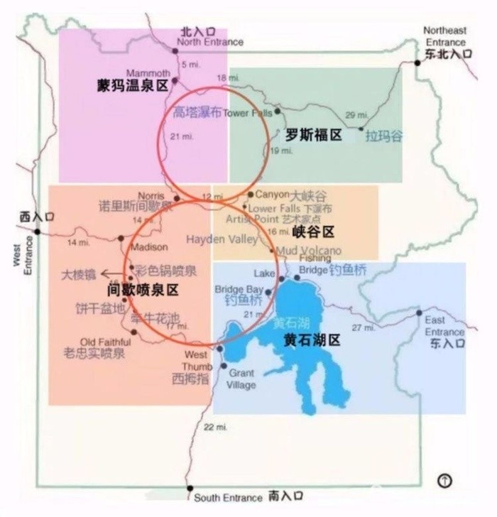
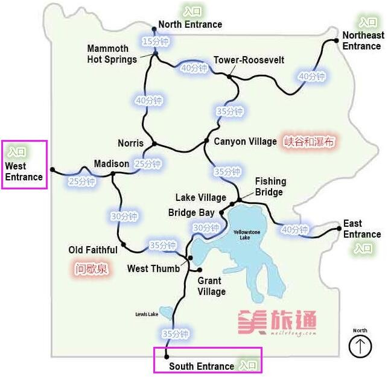
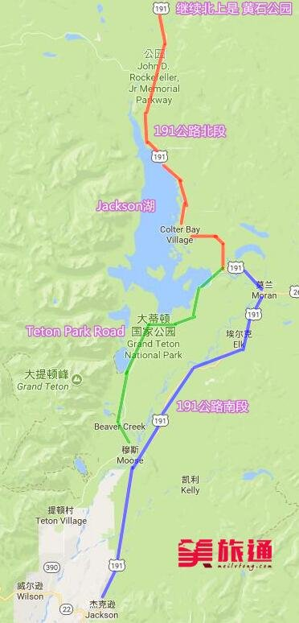

1.Walmart或者Safeway买些零食吃的带着，盐湖城下飞机后得赶时间去取车，然后前往黄石，机场买东西会比较匆忙，也不一定能买到想吃的。
2.下载好离线地图，以防没有信号。
1.航班：DELTA 2071，10:19am --> 1:14pm， 搭乘lyft或者Uber直接前往机场
亲爱的TT小朋友，你要是能七点收拾好出门就再好不过啦～
2.下飞机后前往AVIS取车
3.开车前往 110 Gray Wolf Ave, West Yellowstone, MT 59758
全程324miles，预计5-6小时
4.到达目的地，吃饭，附近3.5分以上餐厅共9家，4分以上的有7家
然后睡觉休息
攻略参考网址： 北美省钱快报 携程网 马蜂窝 美旅通 人人网 iTrip
黄石地图
0.0黄石的南门连接大提顿公园
咱们住的地方靠近黄石西门和北门，但谷歌地图只发现了从咱们住的地方去西门的路，大概5到10分钟。
总结了一个游玩的路线，每天早上八点出发，分别沿下、上8字的路线：
D1 用时至少10小时
西门→彩锅泉(30分钟)→大棱镜泉(1小时)→老忠实喷泉(1-2小时)→西拇指间歇泉盆地(1小时)→黄石湖(1小时)→钓鱼桥(1小时)→返回西门
D2 用时至少8小时
西门→开车1小时→猛犸热泉(1小时)→高塔瀑布(1小时)→大峡谷，黄石下瀑布，艺术家点(2.5小时)→钓鱼桥→返回西门


攻略参考网址：
美旅通
看了其他好多大提顿攻略，都是在晒图加抒发感情，参考价值不大。可能是因为大提顿的线路比较简单吧，只有东西两线。
早上需要从黄石西门一路开到南门，进入大提顿，用时2小时
吃饭，附近3.5分以上餐厅共18家，4分以上的有16家

A. 191公路南段：适合赶时间，只想下车拍摄山河景观
B. Teton Park Road：贴近湖水，适合喜欢徒步
C. 191公路北段：北上黄石公园必须走的路
第一天沿着红线和蓝线开，到jackson休息；然后第二天再去绿线转一圈。
或者跟着感觉走就OK了，毕竟两天一共两个选择～
1.晚上提前买点路上吃的喝的
2.航班：DELTA 1831 4:50pm --> 6:06pm
3.早上争取八点前出门吧，这样赶到机场外加还车的时间比较充裕
4.搭乘lyft或者Uber回家喽～